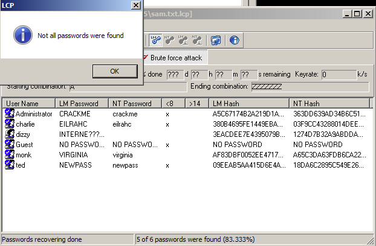
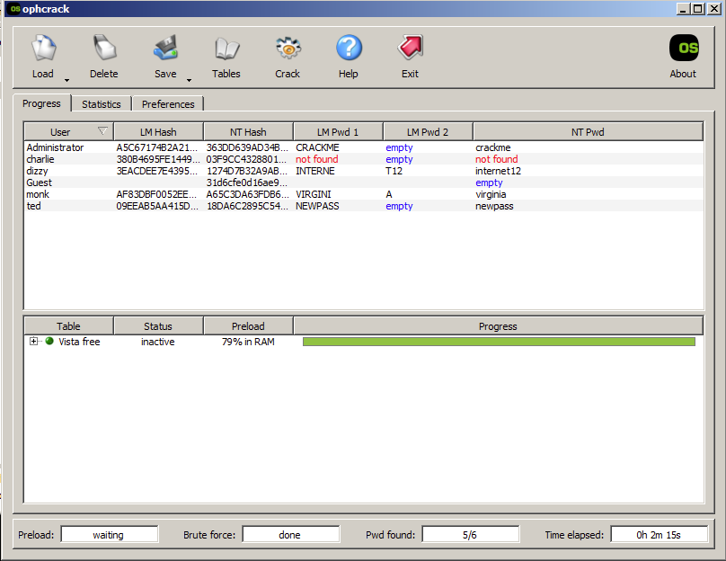

This lab was cracking passwords out of a Windows SAM file two different ways: LCP, which tries dictionary, hybrid, and brute-force attacks in order, and Ophcrack, which just looks hashes up in precomputed rainbow tables instead of calculating anything.
1. Usernames and Cracked Passwords
LCP runs three attack methods in sequence: dictionary, hybrid, and brute force. It tries common words first through the dictionary attack, then combines words with numbers and symbols in the hybrid attack, and finally runs a full brute force on anything that was not cracked in the first two passes. The results from running all three against the SAM.txt file are below.

2. Passwords Not Cracked
Dizzy's password was not cracked. LCP recovered the first half of the LM hash showing INTERNE but could not complete the second half. Windows splits LM hashes into two 7-character chunks and hashes them separately. The dictionary and hybrid passes did not find a match, and the brute force ran through all combinations without finishing the second chunk in the time available. The NT hash was not recovered either as a result.
3. Time to Complete
The cracking process completed in 24 minutes and 3 seconds.
4. Usernames and Cracked Passwords
Ophcrack uses only rainbow tables to crack passwords. It loads precomputed hash-to-password mappings and looks up each hash directly rather than calculating anything on the fly. The results from running Ophcrack with the Vista Free tables against the SAM.txt file are below.

5. Passwords Not Cracked
Charlie's password was not cracked. Rainbow tables can only find passwords that were precomputed and stored in the table. Charlie's hash was not in the Vista Free table, meaning the password either used characters or a length outside what that table covers. Ophcrack has no fallback method so if the hash is not in the table, nothing gets returned.
6. Time to Complete
The cracking process completed in 2 minutes and 15 seconds.
LCP and Ophcrack take completely different approaches to cracking passwords. LCP works through three methods in order. The dictionary attack tries a list of common passwords. The hybrid attack takes those same words and adds numbers, symbols, or character substitutions to them. If neither of those find a match, the brute force pass kicks in and tries every possible combination of characters until it finds the right one or runs out of combinations. This is thorough but slow, especially on the brute force phase. LCP took just over 24 minutes and still could not crack dizzy's password.
Ophcrack skips all of that and just does a lookup. Rainbow tables are massive precomputed databases that map password hashes back to their original plaintext. Ophcrack loads the table into memory and checks each hash against it directly. If the hash is in the table the password comes back instantly. That is why Ophcrack finished in 2 minutes 15 seconds compared to LCP's 24 minutes. The tradeoff is that it only works on passwords already in the table. Charlie's hash was not in the Vista Free table so Ophcrack returned nothing for that account, while LCP eventually cracked it through its brute force pass.
There are situations where each method does not work. Brute force becomes impractical on long or complex passwords. A password with 12 or more characters using mixed case, numbers, and symbols could take years to brute force even on fast hardware. Rainbow tables fail when password hashing uses a salt. A salt is a random value added to the password before hashing, which makes every hash unique even if two users have the same password. This means precomputed tables are useless because the table would need to be rebuilt from scratch for every unique salt. Modern systems like bcrypt, scrypt, and PBKDF2 all use salting by design specifically to stop rainbow table attacks. The Vista Free tables are also limited to a specific character set and length range, so anything outside that will not be found.
Between the two, rainbow tables are faster and more practical for large scale cracking when the passwords are simple and no salting is in place. Brute force is slower but more complete since it will eventually find any password given enough time and computing power. For real world use most attackers combine both along with dictionary attacks to cover as many passwords as possible as fast as possible.
Multi-factor authentication makes cracked passwords much less useful. Even if someone cracks a hash and gets the plaintext password, MFA requires a second verification step like a phone code or hardware token. A cracked password alone is not enough to get in. Zero-trust security goes further by not automatically trusting anyone on the network regardless of whether they have valid credentials. Every access request gets verified based on the user's identity, device health, location, and behavior. Under zero-trust, a stolen or cracked password is just one piece of a much harder puzzle to solve. Neither MFA nor zero-trust prevents hashes from being cracked, but they make cracked credentials a lot harder to actually use.
Hartman, S., & Dunham, K. (2024). Hands-On Ethical Hacking Tactics. Packt Publishing.
Ophcrack. (2008). Ophcrack - A Windows Password Cracker Based on Rainbow Tables. https://ophcrack.sourceforge.io
LCP Password Cracker. https://www.lcpsoft.com
National Institute of Standards and Technology. (2017). Digital Identity Guidelines (NIST SP 800-63B). https://pages.nist.gov/800-63-3/sp800-63b.html
CISA. (2023). Zero Trust Maturity Model. https://www.cisa.gov/zero-trust-maturity-model